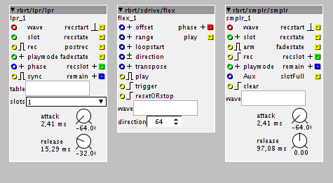

but >MEEOUW< I did quite some objects that try to make sampling FUN!
for example:

but I'm a bit lazy recently about documenting them, and some of them are new.
check out:
* rbrt/smplr allows recording a lot of slices after each other to RAM,up to 127.
eventually, once you want to delete some of these slices, this will result in fragmented RAM,
thus, there's a defragmentation-fuction implemented
* rbrt/lpr is for recording a fixed number of samples (1,2,4,8,16...) into equal-length 'slots',
which is conceptually a waste of RAM
* rbrt/sdrive is really worth looking at,it's a re-write of rbrt/ldrive, but allows pitching the sample up/down
64 half-notes.
Actually, this is a good to-do-list to get my contributions 'straight' , since they are a bit messy right now.
I will do a release-post once I got something done...
what I find to be very important is to get a buffered loading/saving to SD-card done properly,
and streaming as well.
this really has to be intergrated in the firmware,it's a big showstopper at
the time being that axo 'locks up' when you try to load/save a lot of data to SD.
cheers
robert

{kind=link}